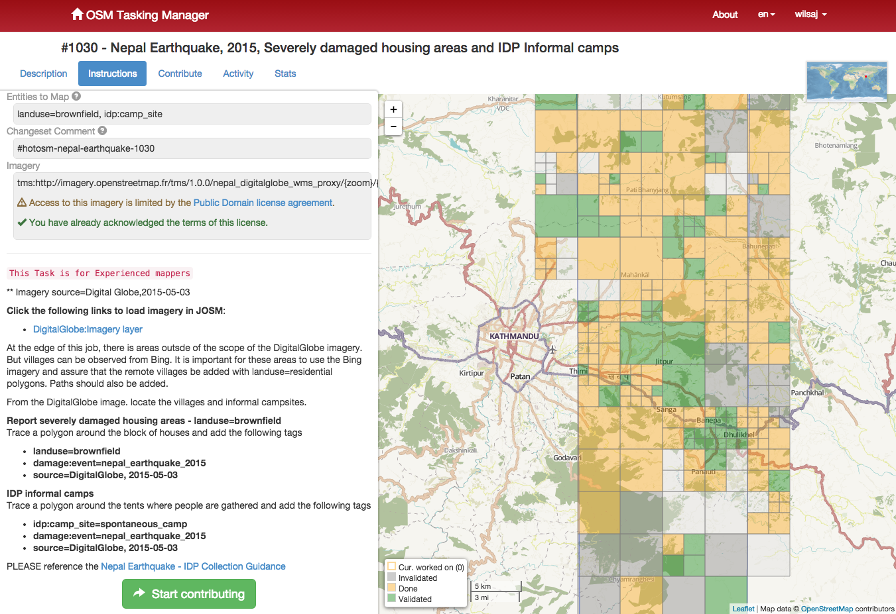

OpenStreetMap!
What is OpenStreetMap?
map of the planet
free to use
enables cool things
Humanitarian OpenStreetMap

using OpenStreetMap
OSM is licensed under the Open Database License:
ODbLTL;DR free to share, create, adapt as long as you attribute and share-alike
but it is huge (~28GB in super-compressed form)
smaller extracts are available for metro areas and countries
lots of tools to import OSM into databases, shapefiles, etc
data model?
(nodes / ways / relations) + tags
tags are key-value pairs that describe what something is
tags can be attached to nodes, ways, and relations
nodes are single points
they can stand alone
nodes can be connected to form ways (lines or polygons in traditional GIS)
ways always have direction - sometimes direction is meaningful
relations are collections of nodes, ways and other relations
relations are not exclusive - something can be part of any number of relations
a relation can contain nodes, ways, and relations at the same time
how to edit?
two ways to make digital edits: web editor
iD or advanced editor
JOSM
you can also go outside
demo
importing from other sources is good too
respect copyright and data license
data source must be allowed to be redistributed under Open Database License
document the import process
get feedback before you import anything
which leads me to....
city of austin data
approx. 575000 buildings to import
address points, too
status: in planning / data prep
want to help?
data license situation
city said data is in the Public Domain
...but maybe not?
we need to clear that up ASAP
some technical data munging to do (postGIS + python)
submit plan and get approval from OSM import team
help prepare and/or teach training sessions
then import party!
who's with me?
but srsly, need to figure out the license situation
Thanks!
This presentation was adapted (ripped off) from Maptime
OSM 101


 create an account
create an account